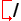

1. Introduction
AXIS is a graphical front-end for LinuxCNC which features a live preview and backplot. It is written in Python and uses Tk and OpenGL to display its user interface.

2. Getting Started
If your configuration is not currently set up to use AXIS, you can change it by editing the .ini file. In the section [DISPLAY] change the DISPLAY line to read DISPLAY = axis.
The sample configuration sim/axis.ini is already configured to use AXIS as its front-end.
2.1. A Typical Session
-
Start LinuxCNC.
-
Reset E-STOP (F1) and turn the Machine Power (F2) on.
-
Home all axes.
-
Load the g-code file.
-
Use the preview plot to verify that the program is correct.
-
Load the material.
-
Set the proper offset for each axis by jogging and using the Touch Off button as needed.
-
Run the program.
|
Note
|
To run the same program again depends on your setup and requirements. You might need to load more material and set offsets or move over and set an offset then run the program again. If your material is fixtured then you might need to only run the program again. See the Machine Menu for more information on the run command. |
3. AXIS Display
The AXIS window contains the following elements:
-
A display area that shows one of the following:
-
a preview of the loaded file (in this case, axis.ngc), as well as the current location of the CNC machine’s controlled point. Later, this area will display the path the CNC machine has moved through, called the backplot
-
a large readout showing the current position and all offsets.
-
-
A menu bar and toolbar that allow you to perform various actions
-
Manual Control Tab - which allows you to make the machine move, turn the spindle on or off, and turn the coolant on or off if included in the ini file.
-
MDI Tab - where G-code programs can be entered manually, one line at a time. This also shows the Active G Codes which shows which modal G Codes are in effect.
-
Feed Override - which allows you to scale the speed of programmed motions. The default maximum is 120% and can be set to a different value in the ini file. See the Display Section of the INI file for more information.
-
Spindle Override - which allows you to scale the spindle speed up or down.
-
Jog Speed - which allows you to set the jog speed within the limits set in the ini file. See the Display Section of the INI file for more information.
-
Max Velocity - which allows you to restrict the maximum velocity of all programmed motions (except spindle synchronized motion).
-
A text display area that shows the loaded G-Code.
-
A status bar which shows the state of the machine. In this screen shot, the machine is turned on, does not have a tool inserted, and the displayed position is Relative (showing all offsets), and Actual (showing feedback position).
3.1. Menu Items
Some menu items might be grayed out depending on how you have your .ini file configured. For more information on configuration see the INI Chapter.
-
Open… - Opens a standard dialog box to open a g code file to load in AXIS. If you have configured LinuxCNC to use a filter program you can also open it up. See the FILTER Section of the INI configuration for more information.
-
Recent Files - Displays a list of recently opened files.
-
Edit… - Open the current G code file for editing if you have an editor configured in your ini file. See the DISPLAY Section for more information on specifying an editor to use.
-
Reload - Reload the current g code file. If you edited it you must reload it for the changes to take affect. If you stop a file and want to start from the beginning then reload the file. The toolbar reload is the same as the menu.
-
Save gcode as… - Save the current file with a new name.
-
Properties - The sum of the rapid and feed moves. Does not factor in acceleration, blending or path mode so time reported will never be less than the actual run time.
-
Edit tool table… - Same as Edit if you have defined an editor you can open the tool table and edit it.
-
Reload tool table - After editing the tool table you must reload it.
-
Ladder editor - If you have loaded Classic Ladder you can edit it from here. See the Classicladder Chapter for more information.
-
Quit - Terminates the current LinuxCNC session.
|
Warning
|
Do not use Run From Selected Line if your g code program contains subroutines. |
-
Step - Single step through a program.
-
Pause - Pause a program.
-
Resume - Resume running from a pause.
-
Stop - Stop a running program. When run is selected after a stop the program will start from the beginning.
-
Stop at M1 - If an M1 is reached, and this is checked, program execution will stop on the M1 line. Press Resume to continue.
-
Skip lines with "/" - If a line begins with / and this is checked, the line will be skipped.
-
Clear MDI history - Clears the MDI history window.
-
Copy from MDI history - Copies the MDI history to the clipboard
-
Paste to MDI history - Paste from the clipboard to the MDI history window
-
Calibration - Starts the Calibration assistant (emccalib.tcl). Calibration reads the HAL file and for every setp that uses a variable from the ini file that is in an [AXIS_L],[JOINT_N],[SPINDLE_S], or [TUNE] section it creates an entry that can be edited and tested.
-
Show HAL Configuration - Opens the HAL Configuration window where you can monitor HAL Components, Pins, Parameters, Signals, Functions, and Threads.
-
HAL Meter - Opens a window where you can monitor a single HAL Pin, Signal, or Parameter.
-
HAL Scope - Opens a virtual oscilloscope that allows plotting HAL values vs. time.
-
Show LinuxCNC Status - Opens a window showing LinuxCNC’s status.
-
Set Debug Level - Opens a window where debug levels can be viewed and some can be set.
-
Homing - Home one or all axes.
-
Unhoming - Unhome one or all axes.
-
Zero Coordinate System - Set all offsets to zero in the coordinate system chosen.
-
Tool touch off to workpiece - When performing Touch Off, the value entered is relative to the current workpiece (G5x) coordinate system, as modified by the axis offset (G92). When the Touch Off is complete, the Relative coordinate for the chosen axis will become the value entered. See G10 L10 in the G code chapter.
-
Tool touch off to fixture - When performing Touch Off, the value entered is relative to the ninth (G59.3) coordinate system, with the axis offset (G92) ignored. This is useful when there is a tool touch-off fixture at a fixed location on the machine, with the ninth (G59.3) coordinate system set such that the tip of a zero-length tool is at the fixture’s origin when the Relative coordinates are 0. See G10 L11 in the G code chapter.
-
Top View - The Top View (or Z view) displays the G code looking along the Z axis from positive to negative. This view is best for looking at X & Y.
-
Rotated Top View - The Rotated Top View (or rotated Z view) also displays the G code looking along the Z axis from positive to negative. But sometimes it’s convenient to display the X & Y axes rotated 90 degrees to fit the display better. This view is also best for looking at X & Y.
-
Side View - The Side View (or X view) displays the G code looking along the X axis from positive to negative. This view is best for looking at Y & Z.
-
Front View - The Front View (or Y view) displays the G code looking along the Y axis from negative to positive. This view is best for looking at X & Z.
-
Perspective View - The Perspective View (or P view) displays the G code looking at the part from an adjustable point of view, defaulting to X+, Y-, Z+. The position is adjustable using the mouse and the drag/rotate selector. This view is a compromise view, and while it does do a good job of trying to show three (to nine!) axes on a two-dimensional display, there will often be some feature that is hard to see, requiring a change in viewpoint. This view is best when you would like to see all three (to nine) axes at once.
-
Display Inches - Set the AXIS display scaling for inches.
-
Display MM - Set the AXIS display scaling for millimeters.
-
Show Program - The preview display of the loaded G code program can be entirely disabled if desired.
-
Show Program Rapids - The preview display of the loaded G code program will always show the feedrate moves (G1,G2,G3) in white. But the display of rapid moves (G0) in cyan can be disabled if desired.
-
Alpha-blend Program - This option makes the preview of complex programs easier to see, but may cause the preview to display more slowly.
-
Show Live Plot - The highlighting of the feedrate paths (G1,G2,G3) as the tool moves can be disabled if desired.
-
Show Tool - The display of the tool cone/cylinder can be disabled if desired.
-
Show Extents - The display of the extents (maximum travel in each axis direction) of the loaded G code program can be disabled if desired.
-
Show Offsets - The selected fixture offset (G54-G59.3) origin location can be shown as a set of three orthogonal lines, one each of red, blue, and green. This offset origin (or fixture zero) display can be disabled if desired.
-
Show Machine Limits - The machine’s maximum travel limits for each axis, as set in the ini file, are shown as a rectangular box drawn in red dashed lines. This is useful when loading a new G code program, or when checking for how much fixture offset would be needed to bring the G code program within the travel limits of your machine. It can be shut off if not needed.
-
Show Velocity - A display of velocity is sometimes useful to see how close your machine is running to its design velocities. It can be disabled if desired.
-
Show Distance to Go - Distance to go is a very handy item to know when running an unknown G code program for the first time. In combination with the rapid override and feedrate override controls, unwanted tool and machine damage can be avoided. Once the G code program has been debugged and is running smoothly, the Distance to Go display can be disabled if desired.
-
Clear Live Plot - As the tool travels in the Axis display, the G code path is highlighted. To repeat the program, or to better see an area of interest, the previously highlighted paths can be cleared.
-
Show Commanded Position - This is the position that LinuxCNC will try to go to. Once motion has stopped, this is the position LinuxCNC will try to hold.
-
Show Actual Position - Actual Position is the measured position as read back from the system’s encoders or simulated by step generators. This may differ slightly from the Commanded Position for many reasons including PID tuning, physical constraints, or position quantization.
-
Show Machine Position - This is the position in unoffset coordinates, as established by Homing.
-
Show Relative Position - This is the Machine Position modified by G5x, G92, and G43 offsets.
-
About Axis - We all know what this is.
-
Quick Reference - Shows the keyboard shortcut keys.
3.2. Toolbar buttons
From left to right in the Axis display, the toolbar buttons (keyboard shortcuts shown [in brackets]) are:
-
 Toggle Emergency Stop [F1] (also called E-Stop)
Toggle Emergency Stop [F1] (also called E-Stop)
-
 Toggle Machine Power [F2]
Toggle Machine Power [F2]
-
 Open G Code file [O]
Open G Code file [O]
-
 Reload current file [Ctrl-R]
Reload current file [Ctrl-R]
-
 Begin executing the current file [R]
Begin executing the current file [R]
-
 Execute next line [T]
Execute next line [T]
-
 Pause Execution [P] Resume Execution [S]
Pause Execution [P] Resume Execution [S]
-
 Stop Program Execution [ESC]
Stop Program Execution [ESC]
-
 Toggle Skip lines with "/" [Alt-M-/]
-
 Toggle Optional Pause [Alt-M-1]
Toggle Optional Pause [Alt-M-1]
-
 Zoom In
Zoom In
-
 Zoom Out
Zoom Out
-
 Top view
Top view
-
 Rotated Top view
Rotated Top view
-
 Side view
Side view
-
 Front view
Front view
-
 Perspective view
Perspective view
-
 Toggle between Drag and Rotate Mode [D]
Toggle between Drag and Rotate Mode [D]
-
 Clear live backplot [Ctrl-K]
Clear live backplot [Ctrl-K]
3.3. Graphical Display Area
In the upper-left corner of the program display is the coordinate position
display for each axis. To the right of the number an origin symbol
 is shown if the axis has been homed.
is shown if the axis has been homed.
A limit symbol
 is shown on the right side of the
coordinate position number if the axis is on one of its limit switches.
is shown on the right side of the
coordinate position number if the axis is on one of its limit switches.
To properly interpret the coordinate position numbers, refer to the Position:
indicator in the status bar. If the position is Machine Actual, then the
displayed number is in the machine coordinate system. If it is
Relative Actual, then the displayed number is in the offset coordinate
system. When the coordinates displayed are relative and an offset has been set,
the display will include a cyan machine origin
 marker.
marker.
If the position is Commanded, then the exact coordinate given in a G code command is displayed. If it is Actual, then it is the position the machine has actually moved to. These values can be different from commanded postition due to following error, dead band, encoder resolution, or step size. For instance, if you command a movement to X 0.0033 on your mill, but one step of your stepper motor or one encoder count is 0.00125, then the Commanded position might be 0.0033, but the Actual position will be 0.0025 (2 steps) or 0.00375 (3 steps).
When a file is loaded, a preview of it is shown in the display area. Fast moves (such as those produced by the G0 command) are shown as cyan lines. Moves at a feed rate (such as those produced by the G1 command) are shown as solid white lines. Dwells (such as those produced by the G4 command) are shown as small pink X marks.
G0 (Rapid) moves prior to a feed move will not show on the preview plot. Rapid moves after a T<n> (Tool Change) will not show on the preview until after the first feed move. To turn either of these features off program a G1 without any moves prior to the G0 moves.
The extents of the program in each axis are shown. At the ends, the least and greatest coordinate values are indicated. In the middle, the difference between the coordinates is shown.
When some coordinates exceed the soft limits in the .ini file, the relevant dimension is shown in a different color and enclosed by a box. In figure below the maximum soft limit is exceeded on the X axis as indicated by the box surrounding the coordinate value. The minimum X travel of the program is -1.95, the maximum X travel is 1.88, and the program requires 3.83 inches of X travel. To move the program so it’s within the machine’s travel in this case, jog to the left and Touch Off X again.

When no tool is loaded, the location of the tip of the tool is indicated by the tool cone. The tool cone does not provide guidance on the form, length, or radius of the tool.
When a tool is loaded (for instance, with the MDI command T1 M6 ), the cone changes to a cylinder which shows the diameter of the tool given in the tool table file.
When the machine moves, it leaves a trail called the backplot. The color of the line indicates the type of motion: Yellow for jogs, faint green for rapid movements, red for straight moves at a feed rate, and magenta for circular moves at a feed rate.
Axis can optionally display a grid when in orthogonal views. Enable
or disable the grid using the Grid menu under View. When
enabled, the grid is shown in the top and rotated top views; when
coordinate system is not rotated, the grid is shown in the front and
side views as well. The presets in the Grid menu are controlled
by the inifile item [DISPLAY]GRIDS; if unspecified, the default is
10mm 20mm 50mm 100mm 1in 2in 5in 10in.
Specifying a very small grid may decrease performance.
By left-clicking on a portion of the preview plot, the line will be highlighted in both the graphical and text displays. By left-clicking on an empty area, the highlighting will be removed.
By dragging with the left mouse button pressed, the preview plot will be shifted (panned).
By dragging with shift and the left mouse button pressed, or by dragging with the mouse wheel pressed, the preview plot will be rotated. When a line is highlighted, the center of rotation is the center of the line. Otherwise, the center of rotation is the center of the entire program.
By rotating the mouse wheel, or by dragging with the right mouse button pressed, or by dragging with control and the left mouse button pressed, the preview plot will be zoomed in or out.
By clicking one of the Preset View icons, or by pressing V, several preset views may be selected.
3.4. Text Display Area
By left-clicking a line of the program, the line will be highlighted in both the graphical and text displays.
When the program is running, the line currently being executed is highlighted in red. If no line has been selected by the user, the text display will automatically scroll to show the current line.

3.5. Manual Control
While the machine is turned on but not running a program, the items in the Manual Control tab can be used to move the machine or control its spindle and coolant.
When the machine is not turned on, or when a program is running, the manual controls are unavailable.
Many of the items described below are not useful on all machines. When AXIS detects that a particular pin is not connected in HAL, the corresponding item in the Manual Control tab is removed. For instance, if the HAL pin spindle.0.brake is not connected, then the Brake button will not appear on the screen. If the environment variable AXIS_NO_AUTOCONFIGURE is set, this behavior is disabled and all the items will appear.
Axis allows you to manually move the machine. This action is known as jogging. First, select the axis to be moved by clicking it. Then, click and hold the + or - button depending on the desired direction of motion. The first four axes can also be moved by the arrow keys (X and Y), PAGE UP and PAGE DOWN keys (Z), and the [ and ] keys (A).
If Continuous is selected, the motion will continue as long as the button or key is pressed. If another value is selected, the machine will move exactly the displayed distance each time the button is clicked or the key is pressed. By default, the available values are 0.1000, 0.0100, 0.0010, 0.0001
See the DISPLAY Section for more information on setting the increments.
The inifile setting [KINS]JOINTS defines the total number of joints for the system. A joint may be configured with a home switch or for immediate homing. Joints may specify a home sequence that organizes the order for homing groups of joints.
If all joints are configured for homing and have valid home sequences, the homing button will show Home All. Pressing the Home All button (or the Ctrl-HOME key) will initiate homing for all joints using their defined home sequences. Pressing the HOME key will home the joint corresponding to the currently selected axis even if no homing sequence is defined.
If not all axes have valid home sequences, the homing button will show Home Axis and will home the joint for the currently selected axis only. Each axis must be selected and homed separately.
The dropdown menu Machine/Homing provides an alternate method to home axes. The dropdown menu Machine/Unhoming provides means to unhome axes.
See the Homing Configuration Chapter for more information.
Operation is similar to that for Identity Kinematics but, prior to homing, the selection radiobuttons select joints by number. The homing button will show Home All if all joints are configured for homing and have valid home sequences. Otherwise, the homing button will show Home Joint.
See the Homing Configuration Chapter for more information.
By pressing Touch Off or the END key, the G5x offset for the current axis is changed so that the current axis value will be the specified value. Expressions may be entered using the rules for rs274ngc programs, except that variables may not be referred to. The resulting value is shown as a number.

By pressing the Tool Touch Off button the tool length and offsets of the currently loaded tool will be changed so that the current tool tip position matches the entered coordinate.

See also the Tool touch off to workpiece and Tool touch off to fixture options in the Machine menu.
By pressing Override Limits, the machine will temporarily be allowed to jog off of a physical limit switch. This check box is only available when a limit switch is tripped. The override is reset after one jog. If the axis is configured with separate positive and negative limit switches, LinuxCNC will allow the jog only in the correct direction. Override Limits will not allow a jog past a soft limit. The only way to disable a soft limit on an axis is to Unhome it.
The buttons on the first row select the direction for the spindle to rotate: Counterclockwise, Stopped, Clockwise. Counterclockwise will only show up if the pin spindle.0.reverse is in the HAL file (it can be net trick-axis spindle.0.reverse ). The buttons on the next row increase or decrease the rotation speed. The checkbox on the third row allows the spindle brake to be engaged or released. Depending on your machine configuration, not all the items in this group may appear. Pressing the spindle start button sets the S speed to 1.
The two buttons allow the Mist and Flood coolants to be turned on and off. Depending on your machine configuration, not all the items in this group may appear.
3.6. MDI
MDI allows G-code commands to be entered manually. When the machine is not turned on, or when a program is running, the MDI controls are unavailable.

-
History - This shows MDI commands that have been typed earlier in this session.
-
MDI Command - This allows you to enter a g-code command to be executed. Execute the command by pressing Enter or by clicking Go.
-
Active G-Codes - This shows the modal codes that are active in the interpreter. For instance, G54 indicates that the G54 offset is applied to all coordinates that are entered. When in Auto the Active G-Codes represent the codes after any read ahead by the interpreter.
3.7. Feed Override
By moving this slider, the programmed feed rate can be modified. For instance, if a program requests F60 and the slider is set to 120%, then the resulting feed rate will be 72.
3.8. Spindle Speed Override
By moving this slider, the programmed spindle speed can be modified. For instance, if a program requests S8000 and the slider is set to 80%, then the resulting spindle speed will be 6400. This item only appears when the HAL pin spindle.0.speed-out is connected.
3.9. Jog Speed
By moving this slider, the speed of jogs can be modified. For instance, if the slider is set to 1 in/min, then a .01 inch jog will complete in about .6 seconds, or 1/100 of a minute. Near the left side (slow jogs) the values are spaced closely together, while near the right side (fast jogs) they are spaced much further apart, allowing a wide range of jog speeds with fine control when it is most important.
On machines with a rotary axis, a second jog speed slider is shown. This slider sets the jog rate for the rotary axes (A, B and C).
3.10. Max Velocity
By moving this slider, the maximum velocity can be set. This caps the maximum velocity for all programmed moves except spindle-synchronized moves.
4. Keyboard Controls
Almost all actions in AXIS can be accomplished with the keyboard. A full list of keyboard shortcuts can be found in the AXIS Quick Reference, which can be displayed by choosing Help > Quick Reference. Many of the shortcuts are unavailable when in MDI mode.
The Feed Override keys behave differently when in Manual Mode. The keys '12345678 will select an axis if it is programed. If you have 3 axis then ' will select axis 0, 1 will select axis 1, and 2 will select axis 2. The remainder of the number keys will still set the Feed Override. When running a program '1234567890 will set the Feed Override to 0% - 100%.
The most frequently used keyboard shortcuts are shown in the following Table
| Keystroke | Action Taken | Mode |
|---|---|---|
F1 |
Toggle Emergency Stop |
Any |
F2 |
Turn machine on/off |
Any |
`, 1 .. 9, 0 |
Set feed override from 0% to 100% |
Varies |
X, ` |
Activate first axis |
Manual |
Y, 1 |
Activate second axis |
Manual |
Z, 2 |
Activate third axis |
Manual |
A, 3 |
Activate fourth axis |
Manual |
I |
Select jog increment |
Manual |
C |
Continuous jog |
Manual |
Control-Home |
Perform homing sequence |
Manual |
End |
Touch off: Set G5x offset for active axis |
Manual |
Left, Right |
Jog first axis |
Manual |
Up, Down |
Jog second axis |
Manual |
Pg Up, Pg Dn |
Jog third axis |
Manual |
[, ] |
Jog fourth axis |
Manual |
O |
Open File |
Manual |
Control-R |
Reload File |
Manual |
R |
Run file |
Manual |
P |
Pause execution |
Auto |
S |
Resume Execution |
Auto |
ESC |
Stop execution |
Auto |
Control-K |
Clear backplot |
Auto/Manual |
V |
Cycle among preset views |
Auto/Manual |
Shift-Left,Right |
Rapid X Axis |
Manual |
Shift-Up,Down |
Rapid Y Axis |
Manual |
Shift-PgUp, PgDn |
Rapid Z Axis |
Manual |
@ |
toggle Actual/Commanded |
Any |
# |
toggle Relative/Machine |
Any |
5. Show LinuxCNC Status (linuxcnctop)
AXIS includes a program called linuxcnctop which shows some of the details of LinuxCNC’s state. You can run this program by invoking Machine > Show LinuxCNC Status

The name of each item is shown in the left column. The current value is shown in the right column. If the value has recently changed, it is shown on a red background.
6. MDI interface
AXIS includes a program called mdi which allows text-mode entry of
MDI commands to a running LinuxCNC session. You can run this program by
opening a terminal and typing
mdiOnce it is running, it displays the prompt MDI>. When a blank line is entered, the machine’s current position is shown. When a command is entered, it is sent to LinuxCNC to be executed.
This is a sample session of mdi.
$ mdi
MDI>
(0.0, 0.0, 0.0, 0.0, 0.0, 0.0)
MDI> G1 F5 X1
MDI>
(0.5928500000000374, 0.0, 0.0, 0.0, 0.0, 0.0)
MDI>
(1.0000000000000639, 0.0, 0.0, 0.0, 0.0, 0.0)7. axis-remote
AXIS includes a program called axis-remote which can send certain commands to a running AXIS. The available commands are shown by running axis-remote --help and include checking whether AXIS is running (--ping), loading a file by name, reloading the currently loaded file (--reload), and making AXIS exit (--quit).
8. Manual Tool Change
LinuxCNC includes a userspace HAL component called hal_manualtoolchange, which shows a window prompt telling you what tool is expected when a M6 command is issued. After the OK button is pressed, execution of the program will continue.
The hal_manualtoolchange component includes a hal pin for a button that can be connected to a physical button to complete the tool change and remove the window prompt (hal_manualtoolchange.change_button).
The HAL configuration file lib/hallib/axis_manualtoolchange.hal shows the HAL commands necessary to use this component.
hal_manualtoolchange can be used even when AXIS is not used as the GUI. This component is most useful if you have presettable tools and you use the tool table.
|
Note
|
Important Note: Rapids will not show on the preview after a T<n> is issued until the next feed move after the M6. This can be very confusing to most users. To turn this feature off for the current tool change program a G1 with no move after the T<n>. |

9. Python modules
AXIS includes several Python modules which may be useful to others. For more information on one of these modules, use pydoc <module name> or read the source code. These modules include:
-
emc provides access to the LinuxCNC command, status, and error channels
-
gcode provides access to the rs274ngc interpreter
-
rs274 provides additional tools for working with rs274ngc files
-
hal allows the creation of userspace HAL components written in Python
-
_togl provides an OpenGL widget that can be used in Tkinter applications
-
minigl provides access to the subset of OpenGL used by AXIS
To use these modules in your own scripts, you must ensure that the directory where they reside is on Python’s module path. When running an installed version of LinuxCNC, this should happen automatically. When running in-place, this can be done by using scripts/rip-environment.
10. Using AXIS in Lathe Mode
By including the line LATHE = 1 in the [DISPLAY] section of the ini file, AXIS selects lathe mode. The Y axis is not shown in coordinate readouts, the view is changed to show the Z axis extending to the right and the X axis extending towards the bottom of the screen, and several controls (such as those for preset views) are removed. The coordinate readouts for X are replaced with diameter and radius.

Pressing V zooms out to show the entire file, if one is loaded.
When in lathe mode, the shape of the loaded tool (if any) is shown.

To change the display to a back tool lathe you need to have both LATHE = 1 and BACK_TOOL_LATHE = 1 in the [DISPLAY] section. This will invert the view and put the tool on the back side of the Z axis.

11. Using AXIS in Foam Cutting mode
By including the line FOAM = 1 in the [DISPLAY] section of the ini file, AXIS selects foam-cutting mode. In the program preview, XY motions are displayed in one plane, and UV motions in another. In the live plot, lines are drawn between corresponding points on the XY plane and the UV plane. The special comments (XY_Z_POS) and (UV_Z_POS) set the Z coordinates of these planes, which default to 0 and 1.5 machine units.

12. Advanced Configuration
When AXIS is started it creates the HAL pins for the GUI then it executes the HAL file named in [HAL]POSTGUI_HALFILE in the ini file. Only one post GUI file may be used. Place all HAL commands that connect to the GUI HAL pins in the post gui HAL file.
For more information on ini file settings that can change how AXIS works see the Display Section of the INI Configuration Chapter.
12.1. Program Filters
AXIS has the ability to send loaded files through a filter program. This filter can do any desired task: Something as simple as making sure the file ends with M2, or something as complicated as generating G-Code from an image.
The [FILTER] section of the ini file controls how filters work. First, for each type of file, write a PROGRAM_EXTENSION line. Then, specify the program to execute for each type of file. This program is given the name of the input file as its first argument, and must write rs274ngc code to standard output. This output is what will be displayed in the text area, previewed in the display area, and executed by LinuxCNC when Run. The following lines add support for the image-to-gcode converter included with LinuxCNC:
[FILTER]
PROGRAM_EXTENSION = .png,.gif Greyscale Depth Image
png = image-to-gcode
gif = image-to-gcodeIt is also possible to specify an interpreter:
PROGRAM_EXTENSION = .py Python Script
py = pythonIn this way, any Python script can be opened, and its output is treated as g-code. One such example script is available at nc_files/holecircle.py. This script creates g-code for drilling a series of holes along the circumference of a circle.

If the environment variable AXIS_PROGRESS_BAR is set, then lines written to stderr of the form
FILTER_PROGRESS=%dwill set the AXIS progress bar to the given percentage. This feature should be used by any filter that runs for a long time.
12.2. The X Resource Database
The colors of most elements of the AXIS user interface can be customized through the X Resource Database. The sample file axis_light_background changes the colors of the backplot window to a dark lines on white background scheme, and also serves as a reference for the configurable items in the display area. The sample file axis_big_dro changes the position readout to a larger size font. To use these files:
xrdb -merge /usr/share/doc/emc2/axis_light_background
xrdb -merge /usr/share/doc/emc2/axis_big_droFor information about the other items which can be configured in Tk applications, see the Tk man pages.
Because modern desktop environments automatically make some settings in the X Resource Database that adversely affect AXIS, by default these settings are ignored. To make the X Resource Database items override AXIS defaults, include the following line in your X Resources:
*Axis*optionLevel: widgetDefaultthis causes the built-in options to be created at the option level widgetDefault, so that X Resources (which are level userDefault) can override them.
12.3. ~/.axisrc
If it exists, the contents of ~/.axisrc are executed as Python
source code just before the AXIS GUI is
displayed. The details of what may be written in the ~/.axisrc are subject
to change during the development cycle.
The following adds Control-Q as a keyboard shortcut for Quit.
root_window.bind("<Control-q>", "destroy .")
help2.append(("Control-Q", "Quit"))The following stops the "Do you really want to quit" dialog.
root_window.tk.call("wm","protocol",".","WM_DELETE_WINDOW","destroy .")12.4. USER_COMMAND_FILE
A configuration-specific python file may be specified with an ini file
setting [DISLAY]USER_COMMAND_FILE=filename.py. Like a ~/.axisrc file,
this file is sourced just before the AXIS GUI is displayed. This file
is specific to an ini file configuration not the user’s home directory.
When this file is specified, an existing ~/.axisrc file is ignored.
12.5. user_live_update()
The axis gui includes a no-op (placeholder) function named
user_live_update() that is executed at the conclusion of the update()
function of its LivePlotter class. This function may be implemented
within a ~/.axisrc python script or a [DISPLAY]USER_COMMAND_FILE
python script to make custom, periodic actions. The details of what may
be accomplished in this function are dependent on the axis gui
implementation and subject to change during the development cycle.
12.6. user_hal_pins()
The axis gui includes a no-op (placeholder) function named
user_hal_pins().
It is executed just after the .axisrc file is called and
just before any gladevcp panels / embedded tabs are initialized.
This function may be implemented
within a ~/.axisrc python script or a [DISPLAY]USER_COMMAND_FILE
python script to make custom HAL pins that use the axisui. prefix.
Use comp as the HAL component instance reference.
HAL comp.ready() is called just after this function returns.
12.7. External Editor
The menu options File > Edit… and File > Edit Tool Table… become available after defining the editor in the ini section [DISPLAY]. Useful values include EDITOR=gedit and EDITOR=gnome-terminal -e vim. For more information, see the Display Section of the INI Configuration Chapter.
12.8. Virtual Control Panel
AXIS can display a custom virtual control panel in the right-hand pane. You can program buttons, indicators, data displays and more. For more information, see the PyVCP Chapter and the GladeVCP Chapter.
12.9. Preview Control
Special comments can be inserted into the G Code file to control how the preview of AXIS behaves. In the case where you want to limit the drawing of the preview use these special comments. Anything between the (AXIS,hide) and (AXIS,show) will not be drawn during the preview. The (AXIS,hide) and (AXIS,show) must be used in pairs with the (AXIS,hide) being first. Anything after a (AXIS,stop) will not be drawn during the preview.
These comments are useful to unclutter the preview display (for instance while debugging a larger g-code file, one can disable the preview on certain parts that are already working OK).
-
(AXIS,hide) Stops the preview (must be first)
-
(AXIS,show) Resumes the preview (must follow a hide)
-
(AXIS,stop) Stops the preview from here to the end of the file.
-
(AXIS,notify,the_text) Displays the_text as an info display This display can be useful in the Axis preview when (debug,message) comments are not displayed.
12.10. Axisui Pins
To improve the interaction of AXIS with physical jog wheels, the axis currently selected in the GUI is also reported on a pin with a name like axisui.jog.x. One of these pins is TRUE at one time, and the rest are FALSE. These are meant to control motion’s jog-enable pins.
Axis has Hal pins to indicate which jog radio button is selected in the Manual Control tab.
Type Dir Name
bit OUT axisui.jog.x
bit OUT axisui.jog.y
bit OUT axisui.jog.z
bit OUT axisui.jog.a
bit OUT axisui.jog.b
bit OUT axisui.jog.c
bit OUT axisui.jog.u
bit OUT axisui.jog.v
bit OUT axisui.jog.wAxis has a Hal pin to indicate the jog increment selected on the Manual Tab.
Type Dir Name
float OUT axisui.jog.incrementAxis has a Hal output pin that indicates when an abort has occurred. The axisui.abort pin will be TRUE and come back to FALSE after 0.3ms.
Type Dir Name
bit OUT axisui.abortAxis has a Hal output pin that indicates when an error has occurred. The axisui.error pin will remain TRUE until all error notifications have been dismissed.
Type Dir Name
bit OUT axisui.errorAxis has Hal input pins to clear the pop up notifications for errors and information.
Type Dir Name
bit IN axisui.notifications-clear
bit IN axisui.notifications-clear-error
bit IN axisui.notifications-clear-infoAxis has a Hal input pin that disables/enables the Pause/Resume funtion.
Type Dir Name
bit IN axisui.resume-inhibit13. Axis Customization Hints
Axis is a fairly large and difficult-to-penetrate code base, this is helpful
To keep the code stable but makes it difficult to customize.
Here we will show code snippets to modify behaviours or visuals of the screen.
Keep in mind the internal code of AXIS can change from time to time.
these snippets are not guaranteed to continue to work - they may need adjustment.
13.1. The update function
There is a function in Axis named user_live_update that is called every time Axis updates itself. You can use this to update your own functions.
# continuous update function def user_live_update(): print 'i am printed every update...'
13.2. Disable the Close Dialog
# disable the do you want to close dialog root_window.tk.call("wm","protocol",".","WM_DELETE_WINDOW","destroy .")
13.3. Change the Text Font
# change the font font = 'sans 11' fname,fsize = font.split() root_window.tk.call('font','configure','TkDefaultFont','-family',fname,'-size',fsize) # redo the text in tabs so they resize for the new default font root_window.tk.call('.pane.top.tabs','itemconfigure','manual','-text',' Manual - F3 ') root_window.tk.call('.pane.top.tabs','itemconfigure','mdi','-text',' MDI - F5 ') root_window.tk.call('.pane.top.right','itemconfigure','preview','-text',' Preview ') root_window.tk.call('.pane.top.right','itemconfigure','numbers','-text',' DRO ') # gcode font is independent root_window.tk.call('.pane.bottom.t.text','configure','-foreground','blue') #root_window.tk.call('.pane.bottom.t.text','configure','-foreground','blue','-font',font) #root_window.tk.call('.pane.bottom.t.text','configure','-foreground','blue','-font',font,'-height','12')
13.4. Modify Rapid Rate with Keyboard Shortcuts
# use control + ` or 1-0 as keyboard shortcuts for rapidrate and keep ` or 1-0 for feedrate # also adds text to quick reference in help help1.insert(10,("Control+ `,1..9,0", _("Set Rapid Override from 0% to 100%")),) root_window.bind('<Control-Key-quoteleft>',lambda event: set_rapidrate(0)) root_window.bind('<Control-Key-1>',lambda event: set_rapidrate(10)) root_window.bind('<Control-Key-2>',lambda event: set_rapidrate(20)) root_window.bind('<Control-Key-3>',lambda event: set_rapidrate(30)) root_window.bind('<Control-Key-4>',lambda event: set_rapidrate(40)) root_window.bind('<Control-Key-5>',lambda event: set_rapidrate(50)) root_window.bind('<Control-Key-6>',lambda event: set_rapidrate(60)) root_window.bind('<Control-Key-7>',lambda event: set_rapidrate(70)) root_window.bind('<Control-Key-8>',lambda event: set_rapidrate(80)) root_window.bind('<Control-Key-9>',lambda event: set_rapidrate(90)) root_window.bind('<Control-Key-0>',lambda event: set_rapidrate(100)) root_window.bind('<Key-quoteleft>',lambda event: set_feedrate(0)) root_window.bind('<Key-1>',lambda event: set_feedrate(10)) root_window.bind('<Key-2>',lambda event: set_feedrate(20)) root_window.bind('<Key-3>',lambda event: set_feedrate(30)) root_window.bind('<Key-4>',lambda event: set_feedrate(40)) root_window.bind('<Key-5>',lambda event: set_feedrate(50)) root_window.bind('<Key-6>',lambda event: set_feedrate(60)) root_window.bind('<Key-7>',lambda event: set_feedrate(70) root_window.bind('<Key-8>',lambda event: set_feedrate(80)) root_window.bind('<Key-9>',lambda event: set_feedrate(90)) root_window.bind('<Key-0>',lambda event: set_feedrate(100))
13.5. Read the INI file
# read an ini file item machine = inifile.find('EMC','MACHINE') print 'machine name =',machine
13.6. Read linuxcnc Status
# linuxcnc status can be read from s. print s.actual_position print s.paused
13.7. Change the current view
# set the view of the preview # valid views are view_x view_y view_y2 view_z view_z2 view_p commands.set_view_z()
13.8. Creating new AXISUI HAL Pins
def user_hal_pins(): comp.newpin('my-new-in-pin', hal.HAL_BIT, hal.HAL_IN) comp.ready()
13.9. Creating new HAL Component and Pins
# create a component mycomp = hal.component('my_component') mycomp.newpin('idle-led',hal.HAL_BIT,hal.HAL_IN) mycomp.newpin('pause-led',hal.HAL_BIT,hal.HAL_IN) mycomp.ready() # connect pins hal.new_sig('idle-led',hal.HAL_BIT) hal.connect('halui.program.is-idle','idle-led') hal.connect('my_component.idle-led','idle-led') # set a pin hal.set_p('my_component.pause-led','1') # get a pin 2,8+ branch value = hal.get_value('halui.program.is-idle') print 'value is a',type(value),'value of',value
13.10. Switch Tabs with HAL Pins
# hal pins from a GladeVCP panel will not be ready when user_live_update is run # to read them you need to put them in a try/except block # the following example assumes 5 HAL buttons in a GladeVCP panel used to switch # the tabs in the Axis screen. # button names are 'manual-tab', 'mdi-tab', 'preview-tab', 'dro-tab', 'user0-tab' # the user_0 tab if it exists would be the first GladeVCP embedded tab # for linuxCNC 2.8+ branch def user_live_update(): try: if hal.get_value('gladevcp.manual-tab'): root_window.tk.call('.pane.top.tabs','raise','manual') elif hal.get_value('gladevcp.mdi-tab'): root_window.tk.call('.pane.top.tabs','raise','mdi') elif hal.get_value('gladevcp.preview-tab'): root_window.tk.call('.pane.top.right','raise','preview') elif hal.get_value('gladevcp.numbers-tab'): root_window.tk.call('.pane.top.right','raise','numbers') elif hal.get_value('gladevcp.user0-tab'): root_window.tk.call('.pane.top.right','raise','user_0') except: pass
13.11. Add a GOTO Home button
def goto_home(axis): if s.interp_state == linuxcnc.INTERP_IDLE: home = inifile.find('JOINT_' + str(inifile.find('TRAJ', 'COORDINATES').upper().index(axis)), 'HOME') mode = s.task_mode if s.task_mode != linuxcnc.MODE_MDI: c.mode(linuxcnc.MODE_MDI) c.mdi('G53 G0 ' + axis + home) # make a button to home y axis root_window.tk.call('button','.pane.top.tabs.fmanual.homey','-text','Home Y','-command','goto_home Y','-height','2') # place the button root_window.tk.call('grid','.pane.top.tabs.fmanual.homey','-column','1','-row','7','-columnspan','2','-padx','4','-sticky','w') # any function called from tcl needs to be added to TclCommands TclCommands.goto_home = goto_home commands = TclCommands(root_window)
13.12. Add Button to manual frame
# make a new button and put it in the manual frame root_window.tk.call('button','.pane.top.tabs.fmanual.mybutton','-text','My Button','-command','mybutton_clicked','-height','2') root_window.tk.call('grid','.pane.top.tabs.fmanual.mybutton','-column','1','-row','6','-columnspan','2','-padx','4','-sticky','w') # the above send the "mybutton_clicked" command when clicked # other options are to bind a press or release (or both) commands to the button # these can be in addition to or instead of the clicked command # if instead of then delete '-command','mybutton_clicked', from the first line # Button-1 = left mouse button, 2 = right or 3 = middle root_window.tk.call('bind','.pane.top.tabs.fmanual.mybutton','<Button-1>','mybutton_pressed') root_window.tk.call('bind','.pane.top.tabs.fmanual.mybutton','<ButtonRelease-1>','mybutton_released') # functions called from the buttons def mybutton_clicked(): print 'mybutton was clicked' def mybutton_pressed(): print 'mybutton was pressed' def mybutton_released(): print 'mybutton was released' # any function called from tcl needs to be added to TclCommands TclCommands.mybutton_clicked = mybutton_clicked TclCommands.mybutton_pressed = mybutton_pressed TclCommands.mybutton_released = mybutton_released commands = TclCommands(root_window)
13.13. Reading Internal Variables
# the following variables may be read from the vars instance print vars.machine.get() print vars.emcini.get()
active_codes = StringVar
block_delete = BooleanVar
brake = BooleanVar
coord_type = IntVar
display_type = IntVar
dro_large_font = IntVar
emcini = StringVar
exec_state = IntVar
feedrate = IntVar
flood = BooleanVar
grid_size = DoubleVar
has_editor = IntVar
has_ladder = IntVar
highlight_line = IntVar
interp_pause = IntVar
interp_state = IntVar
ja_rbutton = StringVar
jog_aspeed = DoubleVar
jog_speed = DoubleVar
kinematics_type = IntVar
linuxcnctop_command = StringVar
machine = StringVar
max_aspeed = DoubleVar
max_maxvel = DoubleVar
max_queued_mdi_commands = IntVar
max_speed = DoubleVar
maxvel_speed = DoubleVar
mdi_command = StringVar
metric = IntVar
mist = BooleanVar
motion_mode = IntVar
on_any_limit = BooleanVar
optional_stop = BooleanVar
override_limits = BooleanVar
program_alpha = IntVar
queued_mdi_commands = IntVar
rapidrate = IntVar
rotate_mode = BooleanVar
running_line = IntVar
show_distance_to_go = IntVar
show_extents = IntVar
show_live_plot = IntVar
show_machine_limits = IntVar
show_machine_speed = IntVar
show_program = IntVar
show_pyvcppanel = IntVar
show_rapids = IntVar
show_tool = IntVar
show_offsets = IntVar
spindledir = IntVar
spindlerate = IntVar
task_mode = IntVar
task_paused = IntVar
task_state = IntVar
taskfile = StringVar
teleop_mode = IntVar
tool = StringVar
touch_off_system = StringVar
trajcoordinates = StringVar
tto_g11 = BooleanVar
view_type = IntVar13.14. Hide Widgets
# hide a widget # use 'grid' or 'pack' depending on how it was originally placed root_window.tk.call('grid','forget','.pane.top.tabs.fmanual.jogf.zerohome.tooltouch')
13.15. Change a label
# change label of a widget root_window.tk.call('setup_widget_accel','.pane.top.tabs.fmanual.mist','Downdraft') # make sure it appears (only needed in this case if the mist button was hidden) root_window.tk.call('grid','.pane.top.tabs.fmanual.mist','-column','1','-row','5','-columnspan','2','-padx','4','-sticky','w')
13.16. Redirect an existing command
# hijack an existing command # originally the mist button calls the mist function root_window.tk.call('.pane.top.tabs.fmanual.mist','configure','-command','hijacked_command') # The new function def hijacked_command(): print 'hijacked mist command' # add the function to TclCommands TclCommands.hijacked_command = hijacked_command commands = TclCommands(root_window)
13.17. Change the DRO color
# change dro screen root_window.tk.call('.pane.top.right.fnumbers.text','configure','-foreground','green','-background','black')
13.18. Change the Toolbar Buttons
# change the toolbar buttons buW = '3' buH = '2' boW = '3' root_window.tk.call('.toolbar.machine_estop','configure','-image','','-text','ESTOP','-width',buW,'-height',buH,'-borderwidth',boW) root_window.tk.call('.toolbar.machine_power','configure','-image','','-text','POWER','-width',buW,'-height',buH,'-borderwidth',boW) root_window.tk.call('.toolbar.file_open','configure','-image','','-text','OPEN','-width',buW,'-height',buH,'-borderwidth',boW) root_window.tk.call('.toolbar.reload','configure','-image','','-text','RELOAD','-width',buW,'-height',buH,'-borderwidth',boW) root_window.tk.call('.toolbar.program_run','configure','-image','','-text','RUN','-width',buW,'-height',buH,'-borderwidth',boW) root_window.tk.call('.toolbar.program_step','configure','-image','','-text','STEP','-width',buW,'-height',buH,'-borderwidth',boW) root_window.tk.call('.toolbar.program_pause','configure','-image','','-text','PAUSE','-width',buW,'-height',buH,'-borderwidth',boW) root_window.tk.call('.toolbar.program_stop','configure','-image','','-text','STOP','-width',buW,'-height',buH,'-borderwidth',boW) root_window.tk.call('.toolbar.program_blockdelete','configure','-image','','-text','Skip /','-width',buW,'-height',buH,'-borderwidth',boW) root_window.tk.call('.toolbar.program_optpause','configure','-image','','-text','M1','-width',buW,'-height',buH,'-borderwidth',boW) root_window.tk.call('.toolbar.view_zoomin','configure','-image','','-text','Zoom+','-width',buW,'-height',buH,'-borderwidth',boW) root_window.tk.call('.toolbar.view_zoomout','configure','-image','','-text','Zoom-','-width',buW,'-height',buH,'-borderwidth',boW) root_window.tk.call('.toolbar.view_z','configure','-image','','-text','Top X','-width',buW,'-height',buH,'-borderwidth',boW) root_window.tk.call('.toolbar.view_z2','configure','-image','','-text','Top Y','-width',buW,'-height',buH,'-borderwidth',boW) root_window.tk.call('.toolbar.view_x','configure','-image','','-text','Right','-width',buW,'-height',buH,'-borderwidth',boW) root_window.tk.call('.toolbar.view_y','configure','-image','','-text','Front','-width',buW,'-height',buH,'-borderwidth',boW) root_window.tk.call('.toolbar.view_p','configure','-image','','-text','3D','-width',buW,'-height',buH,'-borderwidth',boW) root_window.tk.call('.toolbar.rotate','configure','-image','','-text','Rotate','-width',buW,'-height',buH,'-borderwidth',boW) root_window.tk.call('.toolbar.clear_plot','configure','-image','','-text','Clear','-width',buW,'-height',buH,'-borderwidth',boW)